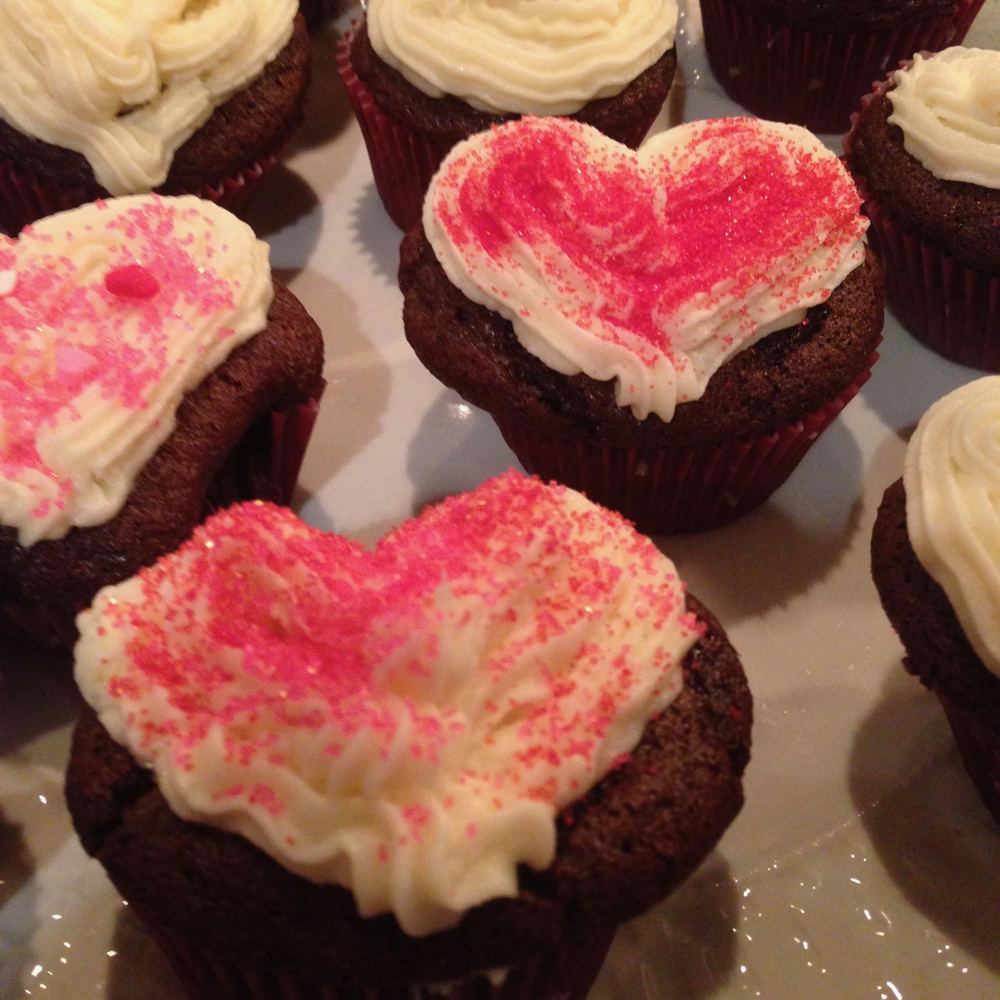

valentine's cupcakes
chocolate heart-shaped cupcakes with vanilla buttercream frosting
baked in February 2015
yield: 12-14 cupcakes
prep time: 25 minutes
cook time: 18 minutes
difficulty level: easy


Instructions
Cupcakes
- 1/2 cup unsweetened natural cocoa powder
- 3/4 cup all-purpose flour (spoon & leveled)
- 1/2 teaspoon baking soda
- 3/4 teaspoon baking powder
- 1/4 teaspoon salt
- 2 large eggs, at room temperature
- 1/2 cup granulated sugar
- 1/2 cup packed light brown sugar
- 1/3 cup vegetable or canola oil (melted coconut oil works too)
- 2 teaspoons vanilla extract
- 1/2 cup buttermilk, room temperature
Frosting
- 1 cup unsalted butter, softened to room temperature
- 4 - 5 cups confectioners' sugar
- 1/4 cup heavy cream
- 2 teaspoons vanilla extract
- salt, to taste
- sprinkles
Directions
For the cupcakes:
- Preheat the oven to 350°F (177°C). Line a 12-cup muffin pan with cupcake liners. Line a second pan with 2 liners - this recipe makes about 14 cupcakes. Set aside.
- To make heart-shaped cupcakes: roll up aluminum foil into a ball and place between the cupcake liner and pan. Roll two smaller aluminum foil balls and place on the sides.
- Whisk the cocoa powder, flour, baking soda, baking powder, and salt together in a large bowl until thoroughly combined. Set aside.
- In a medium bowl, whisk the eggs, granulated sugar, brown sugar, oil, and vanilla together until completely smooth.
- Pour half of the wet ingredients into the dry ingredients. Then half of the buttermilk. Gently whisk - about 5 stirs. Repeat with the remaining wet ingredients and buttermilk. Stir until *just* combined; do not overmix. The batter will be a little thin.
- Pour/spoon the batter into the liners - fill only halfway to avoid spilling over the sides. Bake in batches for 18-21 minutes, or until a toothpick inserted in the center comes out clean. Allow to cool completely before frosting.
For the frosting:
- With a handheld or stand mixer fitted with a paddle attachment, beat the butter on medium speed until creamy - about 2 minutes.
- Add 4 and 1/2 cups confectioners' sugar, cream, and vanilla extract with the mixer running on low.
- Increase to high speed and beat for 3 full minutes.
- Add up to 1/2 cup more confectioners' sugar if frosting is too thin or another Tablespoon of cream if frosting is too thick. Add a pinch of salt if frosting is too sweet.
- Frost cooled cupcakes however you'd like.
Nutrition
- Total calories: 6,037
- Calories per cupcake: 503